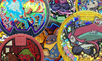
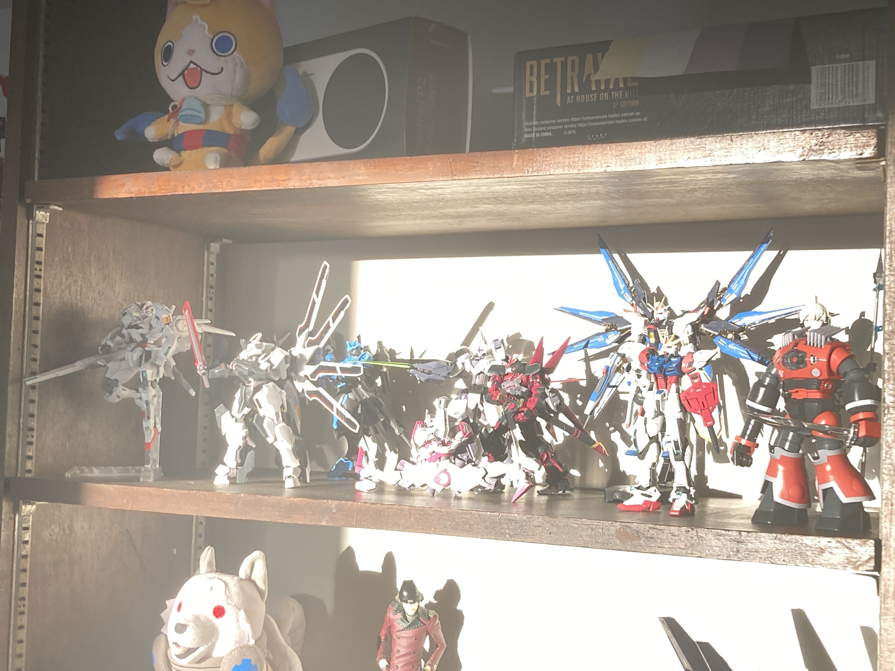

Newsfeed:
Version 0.7
Miiiiiiiinor changes, mostly! The blog is now sortable by a few categories, and the backend functionality is much better. Happy Birthday to me (:
1/20/24 2:33:20 AM CST
Farewell, 2023!
Well, it's been, what, 6 months of this website? Boy howdy! Pretty proud of myself, to be honest. It's very nice to have this place, and to have people who do actually read it. I intended it as a "landing page", for ME, and y'know? We're top of the search results for "Zugerujk" on google.com. We did it, reddit! Anyways, stuff coming in the new year. 'Till then, uh, read blog020 and check out the Yo-kai Medal Favorite Picker. 'Till morrow's morrow! 🫡
12/30/23 10:49:59 PM CST
Upcoming V3:
A blog map, a motion toggle, the Gallery, some little features I've been thinking up, and, uh, even MORE general polish.
1/5/24 12:55:58 AM CST
Featured:

Yo-kai Medal Favorite Picker
A tool to help you find your favorite Yo-kai Medal

My 2023 Year-end Wrap-up

blog013
The blog post a month in the making